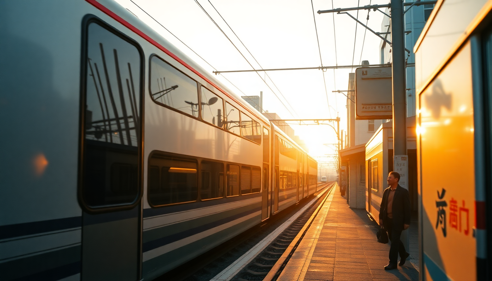

Getting Around Japan: Trains, Buses & Flights Guide

I spent three weeks hopping between Tokyo, Osaka, and Kyoto, and the biggest surprise wasn’t the temples—it was how easy the transport system is once you stop overthinking it. Between the Shinkansen, local commuter lines, highway buses, and the occasional domestic flight, you’ve got options. Here’s what actually worked, what didn’t, and what I’d do differently.
Should I get a JR Pass or pay as I go?
The Japan Rail Pass is the classic recommendation, but it’s not always the best deal anymore. After the October 2023 price hike, a 7-day pass costs around ¥50,000. A one-way Tokyo to Osaka Shinkansen ticket runs about ¥14,000. Do the math: you need to take the Shinkansen round-trip plus a few longer local rides to break even.
I skipped the pass for my Tokyo–Osaka–Kyoto loop. Instead, I bought individual Shinkansen tickets at the green ticket machines in Tokyo Station and Shinagawa Station. The machines have an English button, and you can pay by credit card. For local travel within Tokyo, I used a Suica card (reloadable at any station kiosk). Same card works in Osaka and Kyoto too.
- JR Pass is worth it if you’re doing Tokyo–Hiroshima–Kyoto in under 7 days
- Suica or Icoca for short hops: ¥500 deposit, refundable at major stations
- Nozomi Shinkansen is faster but not covered by the JR Pass—stick with Hikari if you have the pass
- Green Car (first class) is quieter and worth the extra ¥5,000 on a long ride
How do I get from Tokyo to Osaka and Kyoto?
The Shinkansen is the obvious move. From Tokyo Station or Shinagawa Station, take the Nozomi or Hikari bullet train to Shin-Osaka Station. The ride is 2.5 hours on Nozomi, 3 hours on Hikari. From Shin-Osaka, you transfer to a local JR train (10 minutes) to Kyoto Station if that’s your stop.
I did the reverse: Kyoto first, then Osaka. The Shinkansen from Kyoto Station to Shin-Osaka is only 15 minutes. If you’re staying in central Osaka (like Namba or Dotonbori), you’ll need to switch from Shin-Osaka to the Midosuji subway line—adds about 20 minutes.
- Tokyo to Shin-Osaka: ¥14,000 one-way, reserved seat recommended
- Shin-Osaka to Kyoto Station: ¥1,420 local JR train
- Tokyo to Kyoto direct: Some Nozomi trains stop at Kyoto before Osaka
- Night bus is cheaper (¥6,000–¥10,000) but takes 7–8 hours—I’d only do it if I was broke
What’s the best way to get around Tokyo?
Tokyo’s train system looks like a nightmare on the map, but it’s actually logical once you know your hub stations. I stayed near Shinjuku Station—it’s the busiest in the world but also the most connected. The JR Yamanote Line is your loop lifeline: it circles central Tokyo and hits Shibuya, Harajuku, Ueno, Akihabara, and Tokyo Station.
For subways, the Tokyo Metro and Toei lines fill the gaps. I used Google Maps religiously—it tells you the exact platform and exit number. One tip: avoid rush hour (7:30–9:00 AM, 5:30–7:00 PM) on the Yamanote Line unless you enjoy being packed like a sardine.
- JR Yamanote Line: ¥140–¥200 per ride, Suica works
- Tokyo Metro: Same price range, covers areas like Roppongi and Tsukiji
- Shibuya Scramble crossing: Best accessed via Hachiko Exit of Shibuya Station
- Narita Express to Shinjuku: ¥3,200, 90 minutes—faster than the bus
How do I navigate Osaka and Kyoto without a car?
Osaka’s subway is simpler than Tokyo’s. The Midosuji Line runs north-south from Shin-Osaka through Umeda, Shinsaibashi, and Namba. I used it to get to Dotonbori for street food and Osaka Castle. The Osaka Amazing Pass (¥2,800 for one day) covers unlimited subway and entry to 40 attractions—worth it if you’re sightseeing.
Kyoto is trickier. The subway only has two lines, so buses are your friend. The Kyoto City Bus network covers Kinkaku-ji (Golden Pavilion), Arashiyama Bamboo Grove, and Fushimi Inari Shrine. I got a Kyoto Bus One-Day Pass for ¥700 from the machine at Kyoto Station. Buses are slow during cherry blossom season—walk or rent a bike if you can.
- Osaka subway: ¥180–¥230 per ride, Suica works
- Kyoto bus: ¥230 per ride, exact change or IC card
- Arashiyama: Take the JR Sagano Line from Kyoto Station—15 minutes, ¥240
- Fushimi Inari: JR Nara Line from Kyoto Station—5 minutes, ¥140
Are domestic flights worth it for longer trips?
If you’re heading beyond the Tokyo–Osaka–Kyoto triangle, yes. I flew from Tokyo Haneda to Fukuoka for ¥8,000 on Peach Aviation—cheaper than the Shinkansen (¥22,000) and faster (1.5 hours vs 5 hours). But factor in airport transfer time: Haneda is 30 minutes from Shinjuku via the Keikyu Line, while Narita is an hour.
For the triangle itself, don’t bother flying. The Shinkansen is more reliable and drops you in city centers. I only recommend flights for Hokkaido, Okinawa, or Kyushu.
- Peach, Jetstar, Skymark: Budget carriers, book early for deals
- Haneda vs Narita: Haneda is closer to central Tokyo
- Check luggage fees: Budget airlines charge ¥3,000+ for a checked bag
- Shinkansen is better for Tokyo–Osaka–Kyoto: door-to-door in under 3 hours
FAQ
Is the Japan Rail Pass worth it in 2024? Only if you’re doing a long-distance loop like Tokyo–Hiroshima–Kyoto within 7 days. For a simple Tokyo–Osaka–Kyoto trip, buying individual Shinkansen tickets is cheaper. I saved about ¥15,000 by skipping the pass.
Can I use my Suica card in Osaka and Kyoto? Yes. Suica works on JR lines, subways, and buses across all three cities. You can also use it at convenience stores like 7-Eleven and FamilyMart. Just reload at any ticket machine.
How do I get a seat on the Shinkansen without a reservation? Buy a non-reserved ticket at the machine—it’s ¥500 cheaper. Then line up at the non-reserved car platforms (cars 1–3 on most trains). On busy weekends, arrive 20 minutes early to guarantee a seat.
Conclusion
- Skip the JR Pass for a Tokyo–Osaka–Kyoto trip unless you’re adding Hiroshima or longer legs
- Get a Suica or Icoca card for local trains and buses—it’s the easiest way to pay
- Use the Shinkansen for intercity travel; flights only make sense for far-flung regions
- Kyoto buses are slow but essential—get the one-day pass at Kyoto Station
- Avoid rush hour on the Yamanote Line in Tokyo and the Midosuji Line in Osaka